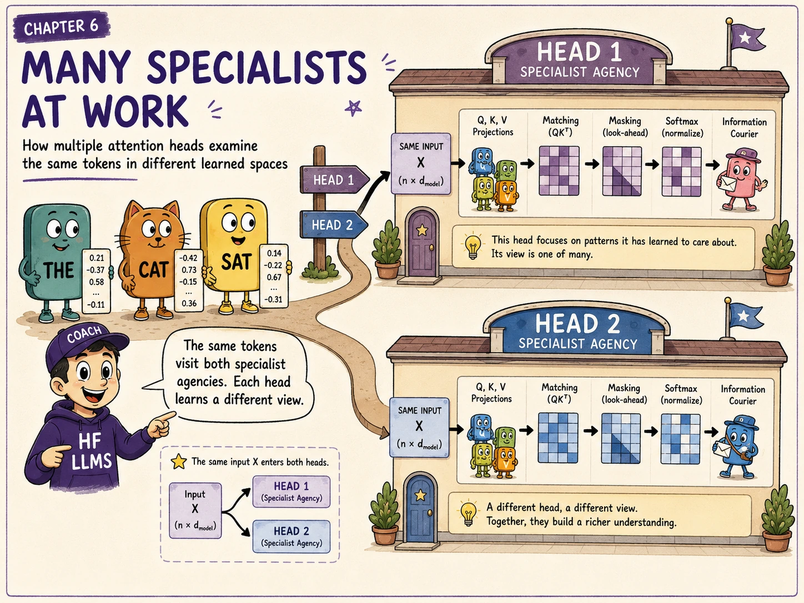
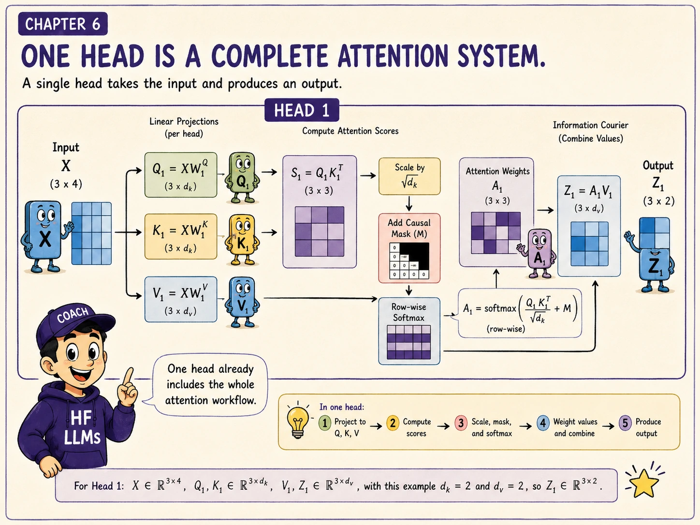
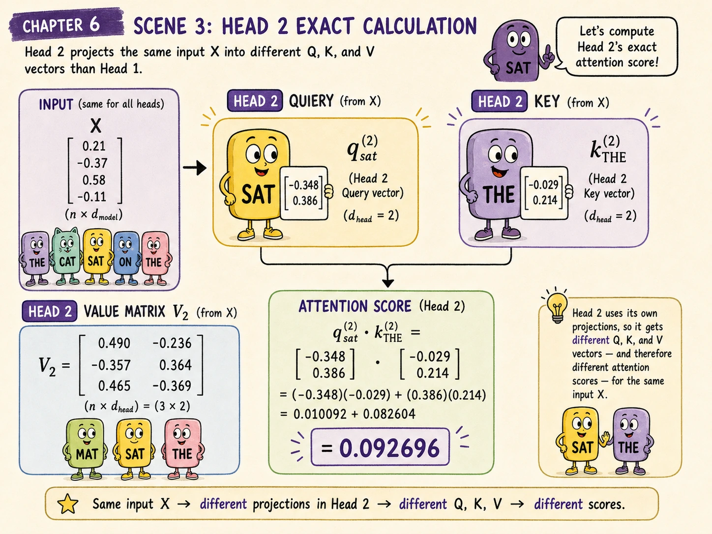
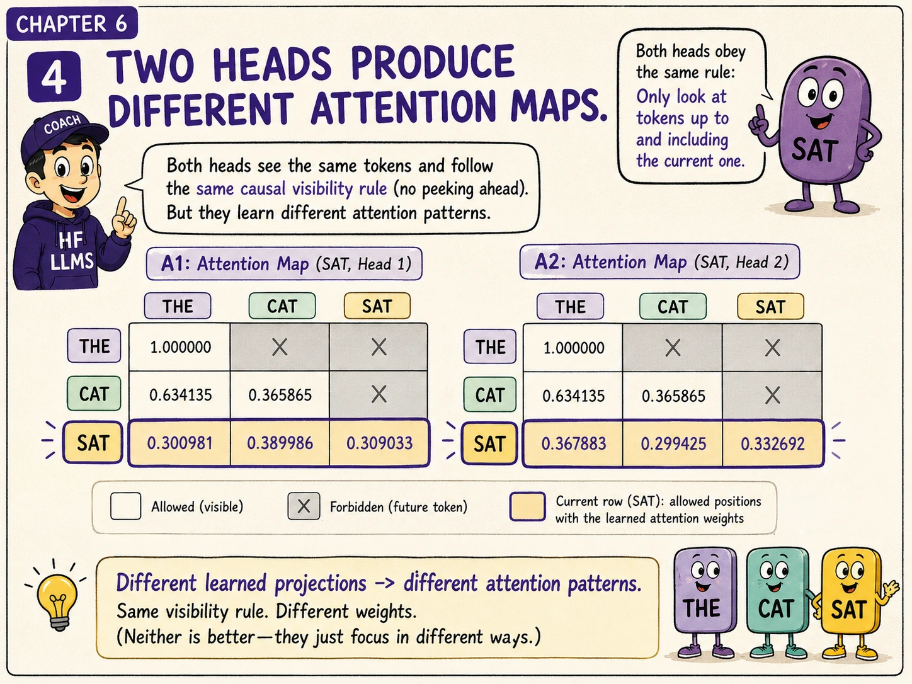
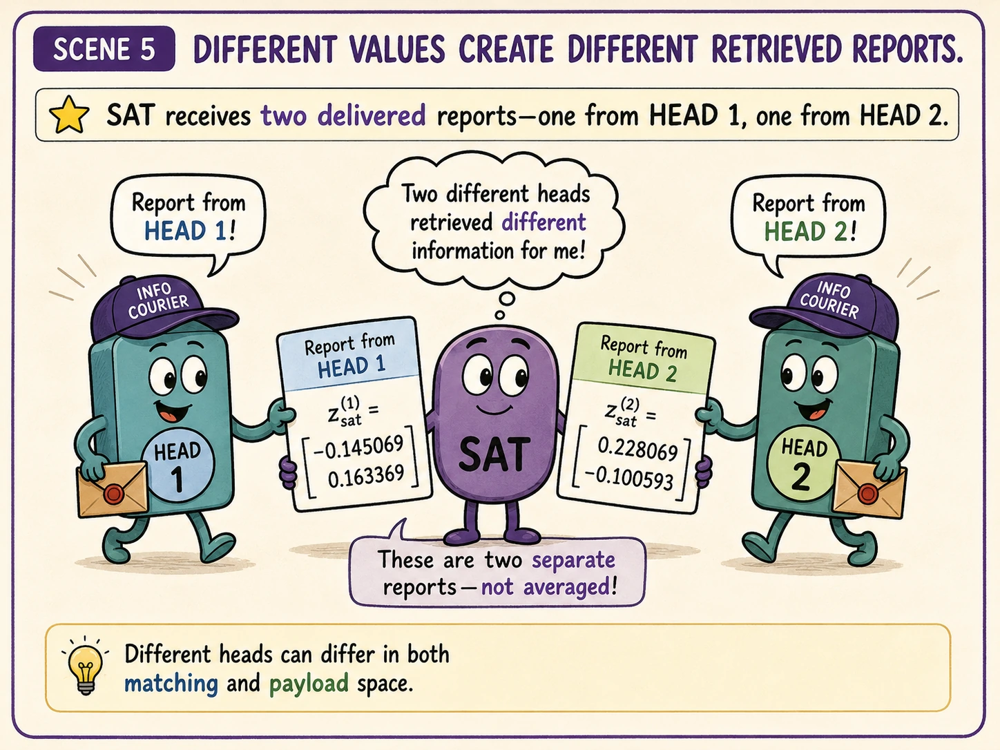
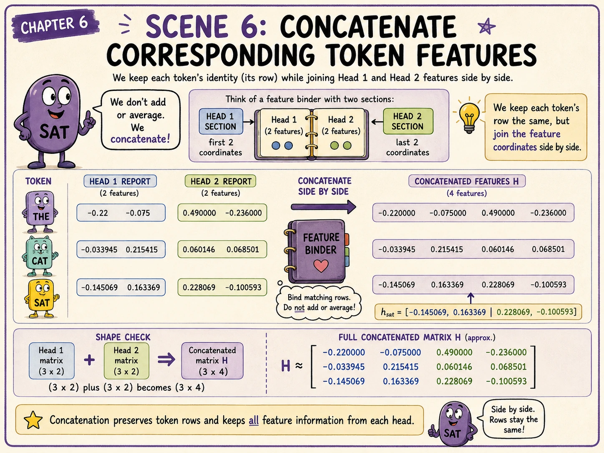
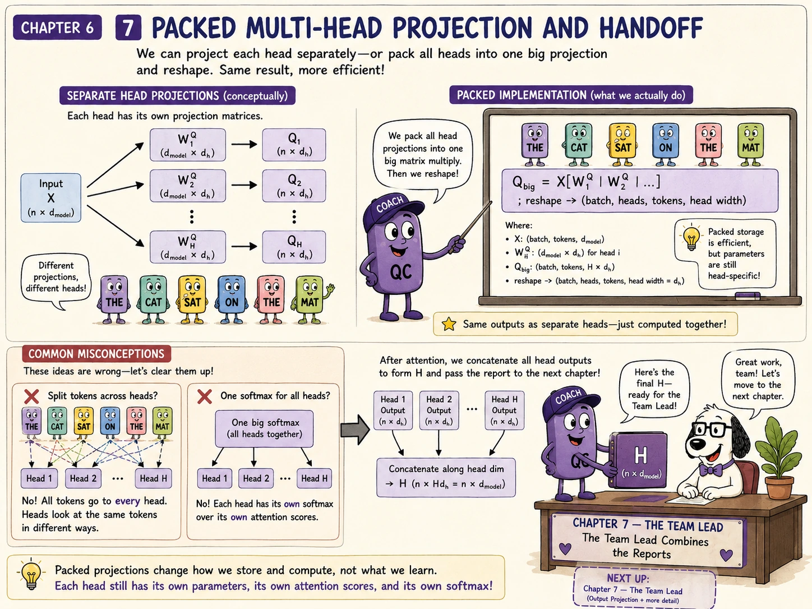

Chapter 5 completed one causal self-attention head:
For our three-token sequence, that head produced:
One head gives every token one learned way to search, match, and retrieve information.
But Transformers usually run several heads in parallel.
Why should the model repeat attention instead of simply making one head wider?
Each attention head learns its own Query, Key, and Value projections. Multiple heads let the same token sequence participate in several different learned matching-and-retrieval systems at the same time.
Our sequence is still:
The cat sat
Imagine that two specialists inspect the same three token states.
The first specialist uses:
The second specialist uses:
Both specialists receive the same input matrix:
But they transform it using different learned parameters.
Therefore, they can produce different:
The heads are not given human-written job descriptions. Their different behaviour emerges because their parameters are learned independently during training.

For head (r):
Every head performs the full attention procedure.
A head is not merely one row of a matrix. It is one set of learned projections plus the matching, masking, normalisation, and retrieval operations that use those projections.
We use:
and:
Each head has:
So one token state begins with four coordinates:
Each head produces a two-coordinate output:
Two such outputs can later be concatenated back into four coordinates:
When (h\cdot d_v=d_{\text{model}}), concatenating all head outputs restores the model width before the output projection.
That is a common design, not a mathematical requirement of attention itself.
Chapter 4 produced Head 1's attention matrix:
Chapter 5 produced its Value matrix:
Therefore:
and:
We will now build Head 2 from the same (X).
Suppose Head 2 has these Query, Key, and Value matrices:
Each matrix has shape:
The same four-dimensional token state is therefore projected into a different two-dimensional space for this head.

For the full sequence:
The result is:
The rows are the Queries for THE, CAT, and SAT in Head 2.
For example, SAT's Head 2 Query is:
This differs from SAT's Head 1 Query because:
Similarly:
which gives:
These rows are searchable descriptions in Head 2's learned Key space.
The Value matrix is:
which gives:
These payloads differ from Head 1's payloads because:
Even if two heads happened to assign similar attention weights, they could still retrieve different information because their Value vectors differ.
The raw score matrix is:
Substituting the calculated matrices gives:
One row belongs to each Query. One column belongs to each Key.
SAT's Query is:
THE's Key is:
Their dot product is:
That is the first entry of SAT's score row.
Because:
we divide every raw score by:
The scaled scores are approximately:
Applying the causal mask gives:
The mask is the same causal rule used by Head 1. The learned scores differ, but future positions remain forbidden for every head.

Applying softmax row by row gives:
Each row sums to 1, apart from tiny rounding differences.
For SAT:
| Source position | Head 1 weight | Head 2 weight |
|---|---|---|
| THE | 0.300981 | 0.367883 |
| CAT | 0.389986 | 0.299425 |
| SAT | 0.309033 | 0.332692 |
The two heads are looking at the same visible positions, but they distribute attention differently.
It is tempting to name one head “grammar” and another “meaning.” Sometimes trained heads show patterns that humans can describe, but the architecture does not assign those roles.
A head is defined by its learned computation, not by a guaranteed human-readable speciality.
The output is:
Substituting the matrices:
The result is:
For SAT:
The first coordinate is:
Head 2 has now completed its own retrieval.

We now have:
and:
For one token position, concatenate the two head outputs along the feature dimension:
For SAT:
For all positions:
which gives:

Concatenation happens across features, not across token positions.
THE's Head 1 output is joined with THE's Head 2 output.
CAT's Head 1 output is joined with CAT's Head 2 output.
SAT's Head 1 output is joined with SAT's Head 2 output.
The token dimension remains:
while the feature width becomes:
Therefore:
Heads do not create extra token positions. They create extra feature views for each existing position.
Averaging would produce:
but this would force coordinate 1 of Head 1 to share meaning with coordinate 1 of Head 2.
The architecture does not guarantee such alignment.
Concatenation keeps the head outputs separate:
A learned output projection can then decide how those coordinates should interact.
The equations are easiest to understand head by head:
A practical implementation often stores all Query projections beside one another:
Then one large multiplication computes all Query coordinates:
The same idea applies to Keys and Values.
The packed result is reshaped into a tensor such as:
The hardware may execute one large operation, but separate column blocks still contain separate learned head parameters.
Before concatenation:
Only after each (Z_r) exists do we assemble:
Every head normally receives representations for all token positions. Head 1 does not process THE while Head 2 processes CAT.
Standard multi-head attention gives each head separate learned Q, K, and V projection blocks.
Architectures such as grouped-query attention intentionally share some Keys and Values, but that is a variant introduced for efficiency.
Each head has its own attention-score rows and performs its own softmax over candidate Key positions.
The correct operation joins feature coordinates for corresponding positions. It does not turn three tokens into six tokens.
A trained head may contribute useful distributed features without corresponding to one clean linguistic rule.
The concatenated matrix (H) is not yet the final multi-head attention output. A learned output projection still needs to mix the head coordinates.
They have different learned Query, Key, and Value projection parameters and therefore can produce different scores, weights, payloads, and outputs.
No. They normally receive the same sequence representation (X).
Along the feature dimension for each corresponding token position.
Their coordinates are learned independently and are not guaranteed to have aligned meanings. Concatenation preserves all coordinates for learned mixing.
In ordinary causal self-attention, yes. Every head must obey the same restriction against attending to future positions, although implementations may also apply other masks.
No. One large matrix can contain separate projection blocks for separate heads.

For head (r):
Multiple heads calculate multiple outputs:
Those outputs are concatenated by feature:
For our two-head example:
In our story:
Two specialists inspect the same clients using different learned criteria. Their reports stay separate until the organisation deliberately combines them.
Concatenation places all head features beside one another, but it does not yet mix them.
The model applies a learned output projection:
Then the attention update rejoins the original token state through a residual connection and normalisation.
That is the job of Chapter 7: